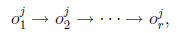

Рассматриваемые далее модели обслуживающих систем будут представлять собой частные случаи следующей общей модели.
- все работы готовы к выполнению в начальный (нулевой) момент времени;
- все работы независимы (они не связаны отношениями предшествования и нет условий предпочтения в виде директивных сроков);
- все операции неразрывны;
- в каждый момент времени на каждой машине выполняется не более одной операции (условие (∗)).
Опишем некоторые частные случаи модели G, представляющие самостоятельный интерес и играющие важную роль как в наших дальнейших исследованиях, так и в теории расписаний.
- Обслуживающая система, в которой операции любой работы Jj ∈ J могут выполняться в любом порядке, но никакие две операции o', o" ∈ Oj не могут выполняться одновременно (что выражается условиями Uj = ∅, Ej = Oj × Oj \ {(o, o) | o ∈ Oj }, Jj ∈ J ), называется системой открытого типа. Если дополнительно предполагается rj = m, |Mjq | ≡ 1 и Mjq ∩ Mjp = ∅, ∀p, q, j (т.е. машина-исполнитель для каждой операции задана однозначно, и каждая работа имеет ровно по одной операции на каждой машине), то получаем систему open shop (OS). Системы открытого типа рассматриваются в главе 1.
- Если для каждой работы Jj ∈ J на множестве Oj задан линейный порядок (т.е. граф редукции Gj состоит из единственной цепи oj1 → oj2 → · · · → ojrj ), а исполнитель каждой операции ojq задан однозначно (|Mjq | = 1), то имеем систему job shop (JS). Легко видеть, что в системе job shop каждая работа Jj ∈ J имеет заранее заданный маршрут прохождения машин, и этот машрут может быть раз- личным для разных работ. Системам job shop, а также системам с произвольными множествами Uj посвящена глава 4.
-
Если rj ≡ r, Mjq ≡ Mq , ∀Jj ∈ J ; Mq ∩ Mp = ∅,
при q≠p, и на каждом множестве Oj задан линейный порядок:
(22.1) то обслуживающая система называется системой поточного типа. В частном случае, когда |Mq| ≡ 1, ∀q, и r = m, такая система известна под названием flow shop (коротко, FS). Таким образом, в системе flow shop для каждой работы задан маршрут ее прохождения по машинам, и этот маршрут (M1 , M2 , . . . , Mm ) одинаков для всех работ. (Отсюда следует, что операция oji выполняется на машине Mi.) Системы поточного типа будут изучаться в главе 2.
-
Наконец, в главе 3 будет исследоваться система “линия сборки”, которая отли-
чается от системы flow shop тем, что вместо (22.1) для каждой работы Jj ∈ J
устанавливается следующий порядок предшествования операций из множества
Oj:
(22.2) Здесь операции

 интерпретируются как операции обработки отдельных
деталей сложного прибора. Они выполняются независимо одна от другой и
параллельно на разных машинах. Последняя операция работы Jj (сборка деталей
прибора на машине Mm ) может выполняться лишь после того, как готовы все
детали этого прибора.
интерпретируются как операции обработки отдельных
деталей сложного прибора. Они выполняются независимо одна от другой и
параллельно на разных машинах. Последняя операция работы Jj (сборка деталей
прибора на машине Mm ) может выполняться лишь после того, как готовы все
детали этого прибора.